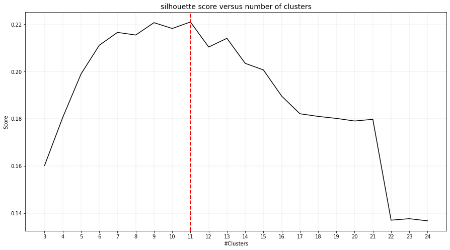
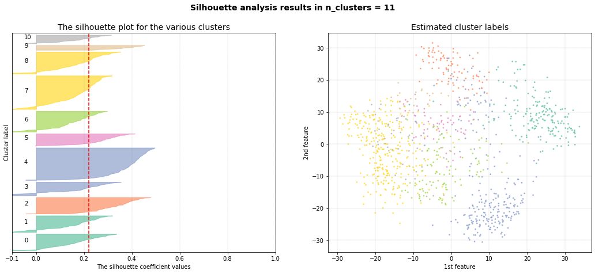
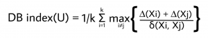
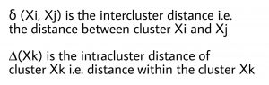
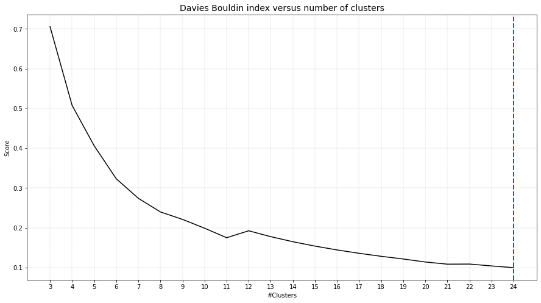
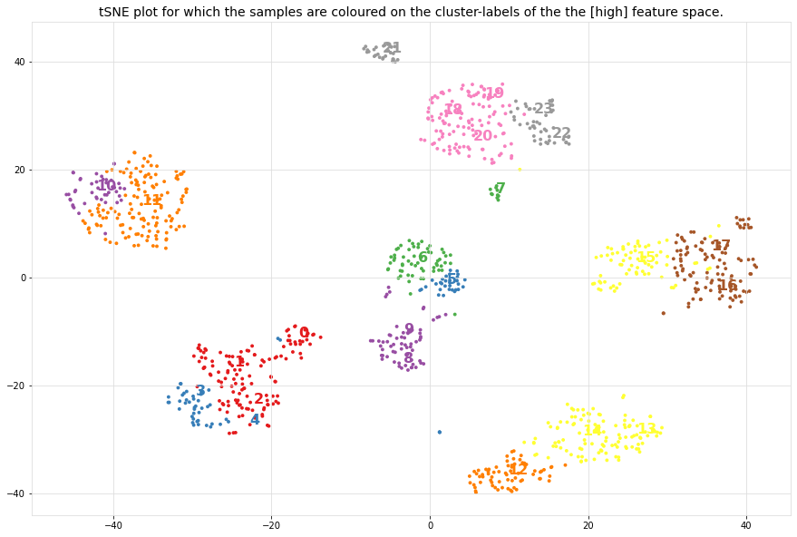
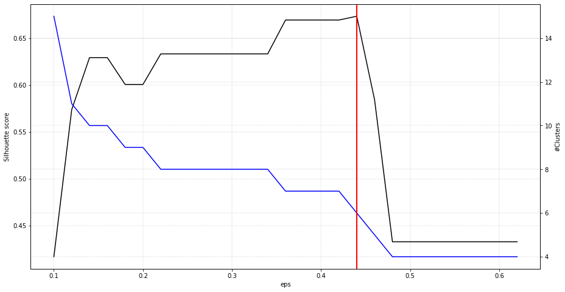
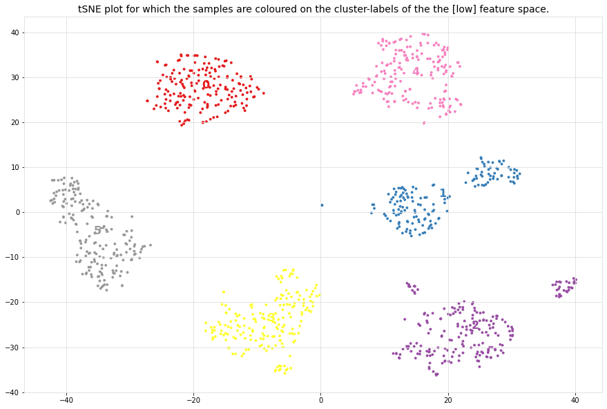
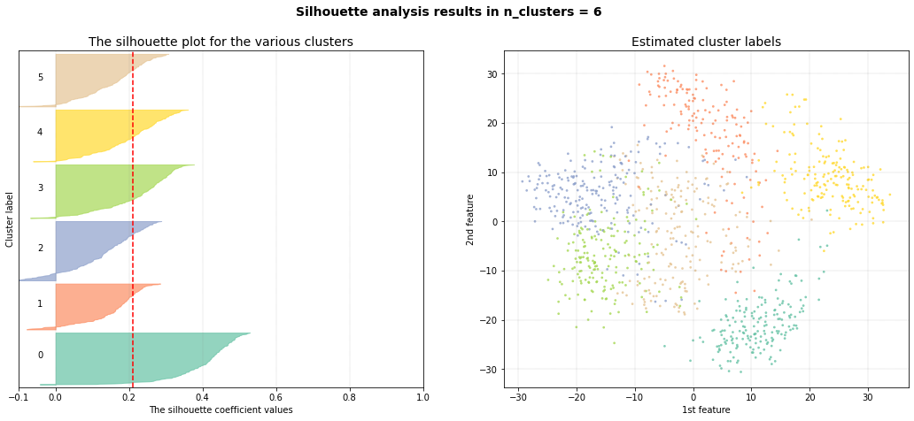

Gridsearch
For the detection of the optimal number of clusters, the python library clusteval is utilized to evaluate the goodness of clusters.
The clustering approaches can be set to agglomerative, kmeans, dbscan and hdbscan, for which the clusteval library then searches across the space of clusters and method-parameters to determine the optimal number of clusters given the input dataset.
Cluster evaluation can be performed based on:
Silhouette scores
DBindex
Derivative method
Lets load the digits dataset and see how the different methods detects the optimal number of clusters.
from clustimage import Clustimage
# init
cl = Clustimage()
# Example data
X = cl.import_example(data='mnist')
Silhouette
The silhouette value is a measure of how similar a sample is to its own cluster (cohesion) compared to other clusters (separation). The scores ranges between [−1, 1], where a high value indicates that the object is well matched to its own cluster and poorly matched to neighboring clusters. The silhouette approach is thus a sample-wise approach, which means that for each sample, a silhouette score is computed and if most samples have a high value, then the clustering configuration is appropriate. If many points have a low or negative value, then the clustering configuration may have too many or too few clusters. The silhouette can be calculated with any distance metric, such as the Euclidean distance or the Manhattan distance.
# Feature extraction and cluster evaluation
results = cl.fit_transform(X, evaluate='silhouette', cluster='agglomerative')
# Cluster using different (evaluation) method.
# labels = cl.cluster(evaluate='silhouette', cluster='agglomerative', cluster_space='lower')
# Plot the cluster evaluation
cl.clusteval.plot()
# Scatter
cl.scatter(zoom=3)
# Dendrogram
cl.dendrogram()
 |
|

The silhouette plot shows that the #clusters value of 11 is the best pick for the given data as the majority of clusters are above the average silhouette scores and does not widely fluctuate in the size of the silhouette plots. Note that the cluster evaluation is peformed on the high-dimensional feature space, in this case the top 50PCs. For illustration purposes, the 2D-space is shown and coloured on the detected cluster-labels.
 |
DBindex
The Davies–Bouldin index (DBI), is a metric for evaluating clustering algorithms. This is an internal evaluation scheme, which means that the clustering result is evaluated based on the data clustered itself (internal information). The lower the value, the tighter the clusters and the seperation between clusters.
 |
 |
# After the fit transform you can directly try some other approaches for clustering without doing the preprocessing steps.
# Cluster differently using directly the extracted features.
results = cl.cluster(cluster='agglomerative', method='dbindex')
# Scatter
cl.scatter()
# Dendrogram with cluster evalution
cl.dendrogram()
 |
 |
The DBindex scores lowers gradually and stops at 24 clusters. This limit is the maximum search space by default. The search space can be altered using min_clust and max_clust in the function function clustimage.clustimage.Clustimage.fit_transform().
Note that the cluster evaluation is peformed on the high-dimensional feature space, in this case the top 50PCs. For illustration purposes, the 2D-space is coloured on the detected cluster-labels.
DBSCAN
Density-Based Spatial Clustering of Applications with Noise is an clustering approach that finds core samples of high density and expands clusters from them. This works especially good when having samples which contains clusters of similar density. This approach is recommended in combination with a low-dimensional space, such as the coordinates from tSNE.
# Feature extraction and cluster evaluation on the low-dimensional space
results = cl.cluster(evaluate='silhouette', cluster='dbscan', cluster_space='low')
# Scatter
cl.scatter()
# Dendrogram with cluster evalution
cl.dendrogram()
 |
 |
 |